Summary
What the simulation found
| Question | The estimate | Solved | Feeds | ||
|---|---|---|---|---|---|
| Q1 | commutation loop L, R | 0.39 nH PCB, 1.99 nH total | 2.06 nH PCB, 3.35–3.19 nH total | INFO | snubber, cap placement |
| Q2 | Vds overshoot and ringing | 61.7 V peak | 62.6 V at the driver impedance the datasheet implies, 73.9 V with a strong output stage | FAIL | snubber yes/no, the EG2103's output stage |
| Q3 | RC snubber | none fitted | 2.2 Ω + 0.47 nF, 0.034 W — needed only in the strong-driver corner | PASS | two 0805 footprints per cell |
| Q4 | gate loop, Miller turn-on | not estimated | 3.6 V induced Vgs at the die, limit 1.54 V, 43 µJ per edge at VGS(th),min | FAIL | the FET's Qgd/Ciss, gate-drive rail |
| Q5 | sense chain during an edge | not estimated | tap swings 159 mV against 22.6 mV of signal; the ADC sees 27 LSB | FAIL | filter, taps, synchronised sampling |
| Q6 | sense accuracy at DC | 0.8 mΩ, 50 ppm/K assumed | 0.8301 mΩ, copper 3.6 %, TCR 0.019 %/K | PASS | tap positions, Kelvin connection |
| Q7 | current density and via sharing | 16 vias per drain pad | 5.16 A rms in the busiest via of the low-side array | FAIL | via count, pour widths, zone fill |
| Q13 | DC link and interconnect | 23.2 A rms link, 13 µF of ceramic, 3 V ripple | 20.9 A rms link, 5.6 µF at 60 V, 0.86 Vpp | PASS | board B bulk chemistry, header pins |
| Q12 | common mode at the motor frame | not estimated | the frame follows the switch node to 71 V peak | FAIL | frame bond, Y capacitor |
| Q10 | field at the encoder | not estimated | 93.7 mT at 1 mm gap; 0.09° from 28.3 A | FAIL | magnet size and grade, lead routing |
| Q8 | ADC sampling | not estimated | 0.638 A rms free-running vs 0.21 A synchronised | INFO | DMA-paced ADC trigger from the PWM wrap |
| Q9 | dead time | 1.8 V of distortion with the software dead zone | 0.76 % of torque, THD barely moves | INFO | dead_zone value |
| Q14 | regeneration | none for this board | bus reaches the TVS in 0.26 ms; 1.9 J would land on it | INFO | brake resistor, bulk size, guard timing |
| Q11 | near and far field, and the L1/L2 cross-check | not estimated | the loop cross-check agrees to 9 % (2.91 nH full wave against 2.68 nH PEEC); the whole-board radiated model did not converge | PASS | shielding, lead routing |
Four things changed the design's own arithmetic. The commutation loop is several times the inductance the board was designed on, because VBUS reaches the high-side drain from In2 rather than from a plane 0.1 mm away. Twelve of the sixteen vias under each low-side drain are islands on B.Cu and carry nothing. The device that is supposed to be off is pulled above its own minimum threshold on every turn-on, not by the layout but by its own Qgd/Ciss. And the DC-link ceramics are worth about half their marked value at 60 V.
One number the board cannot settle decides several of the others: how hard the EG2103’s output stage actually drives. The only document obtainable for it gives the peak currents without their test condition, and the edge rate — hence the overshoot, the ringing and whether a snubber is needed — follows it.
Q1
The commutation loop is five times the estimate
The board was designed on geometry.commutation_loop(), which
models the loop as a 15.4 × 5 mm strip 0.1 mm above
the In1 ground plane and gets 0.387 nH for the PCB
part. The board does not do that. VBUS has exactly one zone, on In2, and no
tracks: the high-side drain reaches it only through a 4 × 4
field of 0.4 mm barrels whose antipads perforate In1, and the DC-link
capacitors reach it through one via each. The loop's outward leg therefore
runs 0.55 mm below F.Cu with a ground plane in between.
Solved on the copper as routed, with both devices shorted at their own pads so the number is the PCB's alone, the loop each capacitor sees is 2.52–2.84 nH, and with all four in parallel — which is how they work, strongly coupled — 2.06 nH, 5.3× the estimate.
H1: CONFIRMED, and by more than the hypothesis expected: the PCB part is 2.06 nH, 5.3 times geometry.commutation_loop()'s 0.39 nH, because VBUS reaches the high-side drain from In2 (0.55 mm below F.Cu) through a 16-via field, not from a plane 0.1 mm away.
Adding the two packages (1 nH, bracketed — Infineon does not specify the SuperSO8's lead inductance) and the capacitors' own ESL gives a total of 3.19–3.35 nH against the 1.99 nH the design assumed. The overshoot that line of the table quotes is still the design's own arithmetic — L times the 0.87 A/ns it assumes — and it is wrong for a second reason: the transient in Q2 commutates at about five amps per nanosecond, not one. The peak the circuit actually reaches is in Q2, not here.
Cells B and C
| cell | segments | Leff (nH) |
|---|---|---|
| A | 5049 | 2.18 |
| B | 4080 | 2.23 |
| C | 4495 | 1.91 |
the three cells differ by 15.2 %, so the neighbourhood does matter and cell A is not representative. Cell C is the one whose neighbour is the power-link wedge, where VBUS and GND enter the board, and it is the one that differs.
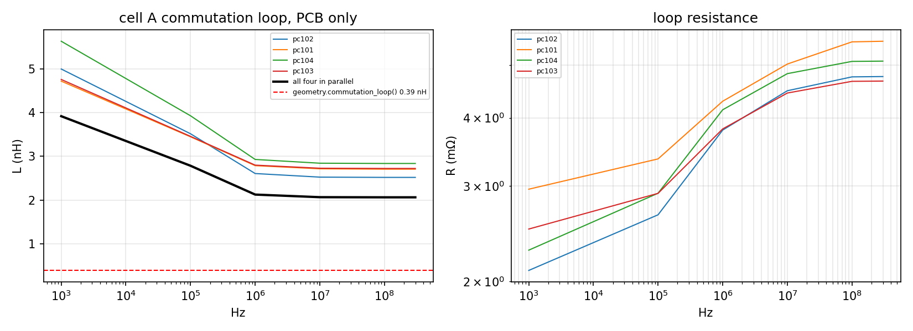
Mesh convergence
| grid target (mm) | segments | Leff (nH) |
|---|---|---|
| 1.8 | 3708 | 2.35 |
| 1.4 | 5049 | 2.18 |
| 1.1 | 7870 | 2.02 |
| 0.9 | 10502 | 1.95 |
| 0.75 | 12805 | 1.98 |
The grid this was solved on is not fine enough to be the answer: a filament grid that coarse cannot let the return current concentrate under a leg running 0.4 mm above it, and that concentration is most of what sets this loop. Refined, it runs from 2.35 nH at 1.8 mm to 1.98 nH at 0.75 mm, the last refinement moving it 1.6 % and in the other direction — so it has settled, and the converged figure is 1.98 nH against the 2.06 nH this report quotes elsewhere, 4 % lower. Q11 drives the same single port in a full-wave solver and, with its own device strip de-embedded, gets 2.91 nH against this model's 2.68 nH for that port — 9 % apart. Everything the number is used for — that the loop is several times the 0.39 nH the board was designed on — holds across all of it.
Skin effect
The sweep uses one filament through the 35 µm copper, which is exact below about 1 MHz and does not push current to the surface above it. The same model with three filaments, at 20 MHz, gives 1.8× the loop resistance and 0.983× the inductance: the resistance in the sweep is a lower bound above a megahertz, the inductance is not affected.
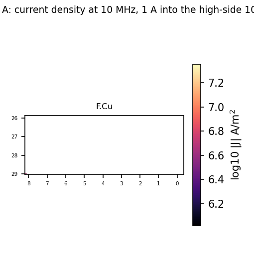
Q2 / Q3
Overshoot meets the criterion at the driver impedance the datasheet implies, and misses it at a strong output stage
Both edges were simulated, with the FET fitted to its own datasheet (see the method section) and the loop parasitics from Q1. The design expected 61.7 V of peak Vds. The answer is not one number, because it is not set by anything on this board: it is set by how hard the EG2103's output stage actually drives, and the only EG2103 document that could be obtained gives IO+/IO− without the condition they are measured at.
Read those ratings the usual way — as an output resistance at the 12 V drive, so 40 Ω sourcing and 20 Ω sinking — and the worst Vds anywhere in the operating envelope is 62.6 V, against a 68 V criterion, a 71.1 V TVS and 80 V of silicon. Give the same part a strong output stage instead (4/2 Ω) and it becomes 73.9 V.
The bracket that decides it
| Rsource (Ω) | Rsink (Ω) | dV/dt (kV/µs) | low side at turn-on (V) | high side at turn-off (V) | ring (MHz) | cycles to 5 % | |
|---|---|---|---|---|---|---|---|
| 40 | 20 | 12 | 59.6 | 62.6 | — | 0 | PASS |
| 12 | 6 | 28 | 68.7 | 64 | 145 | 27 | FAIL |
| 4 | 2 | 62 | 73.9 | 63.7 | 145 | 31 | FAIL |
This is the single largest open question in the cell, and it is a data-sheet question, not a board question. Everything downstream of the edge rate — overshoot, ringing, radiated emission, the induced Vgs of Q4, the snubber of Q3 — moves with it. It is in the hand-back list.
Rg and junction temperature, at the datasheet reading
| Rg (Ω) | Tj (°C) | low side at turn-on (V) | high side at turn-off (V) | ring left at turn-off (V) | peak | decay |
|---|---|---|---|---|---|---|
| 2.2 | 25 | 59.6 | 62.6 | 2.6 | PASS | PASS |
| 2.2 | 125 | 59.6 | 62.6 | 2.59 | PASS | PASS |
| 4.7 | 25 | 59.6 | 62.5 | 2.47 | PASS | PASS |
| 4.7 | 125 | 59.6 | 62.5 | 2.47 | PASS | PASS |
| 10 | 25 | 59.6 | 62.2 | 2.22 | PASS | PASS |
| 10 | 125 | 59.6 | 62.2 | 2.23 | PASS | PASS |
| 22 | 25 | 59.6 | 61.9 | 1.91 | PASS | PASS |
| 22 | 125 | 59.6 | 61.9 | 1.93 | PASS | PASS |
Neither moves it. At this output impedance the gate resistor is a tenth of the path that charges the gate, so changing it from 2.2 to 22 Ω changes the edge by a few per cent, and the turn-off overshoot only falls from 62.6 to 61.9 V. The junction temperature does not appear at all: it changes RDS(on) and the body diode, neither of which sets this edge.
There is no ring to fit at the datasheet reading. The turn-off edge leaves 2.6 V above the rail and comes back without completing three half-cycles about it, and the turn-on approaches the rail from below with a decaying oscillation that never crosses it; either way Q2's five-cycle decay criterion is met. With the strong output stage the turn-on does ring, at 145 MHz for 31 cycles, which is the one criterion that corner fails on top of the peak. The frequency is close to the 100 MHz the design estimated from 1/(2π√(L·Coss)); the loop is bigger and the capacitance smaller than assumed, and the two partly cancel.
The device breaks down at its own V(BR)DSS rather than letting Vds run away: the model includes that, because leaving it out reports an overshoot the silicon would never allow. Nothing in the sweep reaches it — the avalanche energy is zero in every run — so the overshoot is a criterion question, not a survival one.
Sensitivity to the device's capacitance
| capacitances | low side at turn-on (V) | high side at turn-off (V) |
|---|---|---|
| typ | 59.6 | 62.6 |
| max | 59.6 | 62.2 |
Against the datasheet's own switching test the fitted model is faster on 3 of its 4 times at the typical capacitances, by up to 42 % (t_d_off 25.1 vs 43 ns). At the maximum capacitances every one of them is slower than at the typical, and they straddle the datasheet's figures rather than sitting on one side of them, so the two corners bracket the edge rate rather than pointing at one. Every edge-rate-sensitive answer is run at both.
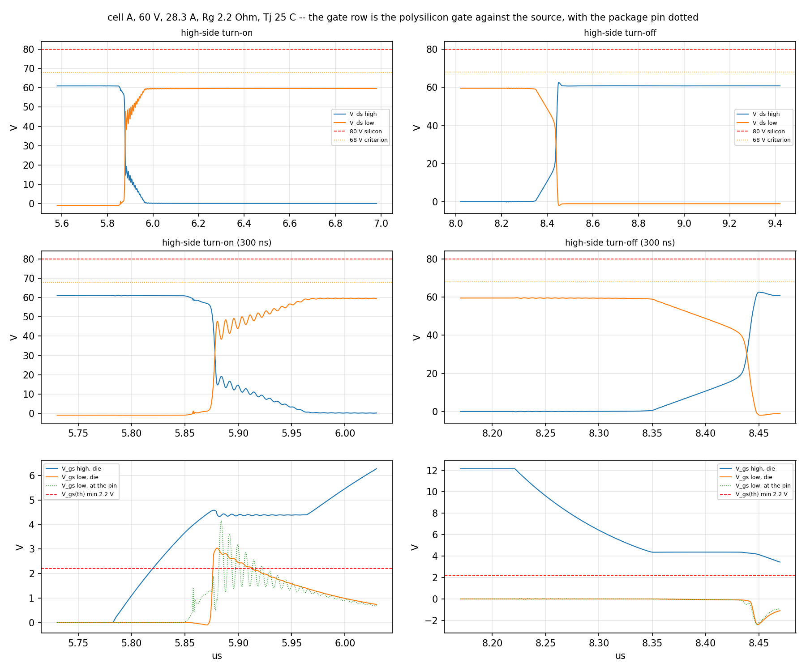
Q3 — the snubber
| R (Ω) | C (nF) | worst Vds (V) | PR (W) |
|---|---|---|---|
| 2.2 | 0.47 | 62.7 | 0.034 |
| 2.2 | 1 | 62.7 | 0.072 |
| 2.2 | 2.2 | 62.7 | 0.158 |
| 2.2 | 4.7 | 62.4 | 0.338 |
| 4.7 | 0.47 | 62.7 | 0.034 |
| 4.7 | 1 | 62.7 | 0.072 |
| 4.7 | 2.2 | 62.5 | 0.158 |
| 4.7 | 4.7 | 62.3 | 0.338 |
| 10 | 0.47 | 62.6 | 0.034 |
| 10 | 1 | 62.6 | 0.072 |
| 10 | 2.2 | 62.5 | 0.158 |
| 10 | 4.7 | 62.4 | 0.338 |
| 22 | 0.47 | 62.6 | 0.034 |
| 22 | 1 | 62.6 | 0.072 |
| 22 | 2.2 | 62.5 | 0.158 |
| 22 | 4.7 | 62.5 | 0.338 |
The smallest one that meets both criteria is 2.2 Ω with 0.47 nF, which brings the worst Vds to 62.7 V and costs 0.034 W per cell at 20 kHz. The loss is C·V²·f and does not depend on R; R only sets the damping. At the driver impedance the datasheet implies, nothing needs snubbing — this is the part to fit only if the output stage turns out to be the strong one.
Q4
The off device sits above its own minimum threshold on every edge, and it is charge, not layout, that puts it there
The question is whether the device that is off gets turned on by the other one's edge. The criterion is an induced Vgs below 0.7 × the minimum threshold, 1.54 V, at 1.2 kV/µs and at twice that.
The switch node does not slew at 1.2 kV/µs. Depending on the driver's output impedance — the open question of Q2 — it slews at 6 to 52 kV/µs, because the fast part of the turn-on is not the gate charging Cgd; it is the low-side body diode snapping off and its recovery current dumping into Coss. Across every combination of Rg, drive strength, capacitance corner and driver impedance, the induced Vgs at the die stays between 2.44 and 3.62 V — above the 1.54 V criterion and above the 2.2 V minimum threshold itself, and almost independent of everything in the sweep.
That flatness is the result, not an artefact. The induced step is the charge divider Qgd/Ciss: the drain's edge pushes a fixed Qgd into the gate whatever the edge rate, and the driver can only take it back through 1.6 Ω of internal gate resistance plus Rg plus its own output impedance — 24 Ω at the datasheet reading, a 102 ns time constant against an edge of a few nanoseconds. Nothing in the gate network is fast enough to matter, so nothing in the gate network changes the answer.
The gate loops, solved
| side | L (nH) | R (mΩ) | ring with Ciss (MHz) | Q |
|---|---|---|---|---|
| high | 13.92 | 21.5 | 18 | 0.41 |
| low | 9.98 | 33.9 | 21.3 | 0.35 |
Both loops are heavily damped — the gate resistor, the driver's own output impedance and the device's 1.6 Ω see to that — so the gate does not ring, and the loop inductance is not what sets the answer below. The answer is set by charge.
| Rg (Ω) | drive × | capacitances | Rsource (Ω) | dV/dt (kV/µs) | at the die (V) | at the pin (V) | |
|---|---|---|---|---|---|---|---|
| 2.2 | 1 | typ | 40 | 11.3 | 3.04 | 4.09 | FAIL |
| 2.2 | 1 | typ | 4 | 37.6 | 2.67 | 8.76 | FAIL |
| 2.2 | 1 | max | 40 | 7.6 | 3.45 | 3.51 | FAIL |
| 2.2 | 1 | max | 4 | 30 | 3.3 | 8.43 | FAIL |
| 4.7 | 1 | typ | 40 | 11.4 | 3.05 | 4.01 | FAIL |
| 4.7 | 1 | typ | 4 | 38.6 | 2.89 | 8.21 | FAIL |
| 4.7 | 1 | max | 40 | 7 | 3.45 | 3.37 | FAIL |
| 4.7 | 1 | max | 4 | 25.6 | 3.52 | 8.11 | FAIL |
| 10 | 1 | typ | 40 | 10.4 | 3.06 | 3.7 | FAIL |
| 10 | 1 | typ | 4 | 27.6 | 3.11 | 7.99 | FAIL |
| 10 | 1 | max | 40 | 6.2 | 3.46 | 3.24 | FAIL |
| 10 | 1 | max | 4 | 19.6 | 3.62 | 7.16 | FAIL |
| 2.2 | 2 | typ | 40 | 12.4 | 3.03 | 4.24 | FAIL |
| 2.2 | 2 | typ | 4 | 52.5 | 2.44 | 9.09 | FAIL |
| 2.2 | 2 | max | 40 | 7.7 | 3.44 | 3.55 | FAIL |
| 2.2 | 2 | max | 4 | 36.2 | 3.14 | 8.66 | FAIL |
| 4.7 | 2 | typ | 40 | 12.3 | 3.04 | 4.16 | FAIL |
| 4.7 | 2 | typ | 4 | 36.3 | 2.66 | 8.5 | FAIL |
| 4.7 | 2 | max | 40 | 7.5 | 3.45 | 3.5 | FAIL |
| 4.7 | 2 | max | 4 | 28.9 | 3.31 | 8.42 | FAIL |
| 10 | 2 | typ | 40 | 11.6 | 3.05 | 3.99 | FAIL |
| 10 | 2 | typ | 4 | 34.4 | 2.91 | 8.24 | FAIL |
| 10 | 2 | max | 40 | 7 | 3.45 | 3.34 | FAIL |
| 10 | 2 | max | 4 | 24.7 | 3.53 | 8.11 | FAIL |
Two voltages are reported because they are different things. The channel responds to the polysilicon gate against the source; a probe on the board sees the package pin, which the Miller current's own I·R drop across that 1.6 Ω lifts a further 6.7 V at the fastest edge. The die number is the one the criterion is about.
Whether it actually conducts
| device | Vto (V) | induced Vgs (V) | high-side peak (A) | cross-conduction (nC) | extra loss per edge (µJ) |
|---|---|---|---|---|---|
| V_GS(th) min | 2.2 | 3.01 | 73.8 | 715 | 42.9 |
| V_GS(th) typ | 3.69 | 3.62 | 56 | -23 | -1.4 |
| cannot conduct | 53.69 | 3.63 | 56.4 | 0 | 0 |
The criterion is a voltage, but what matters is whether charge goes through the channel of the device that is supposed to be off. So the same edge was run twice more: once with the low-side device at the bottom of the datasheet's VGS(th) distribution, and once with a device whose threshold is out of reach but whose capacitances and charges are identical. The difference between the two is cross-conduction and nothing else — no displacement current, no recovery charge.
At the typical threshold there is none: -23 nC, which is the numerical floor of the difference. At the datasheet's minimum threshold there is 715 nC — 43 µJ of extra loss on that edge, and the high-side peak current rises from 56 to 74 A. At 20 kHz that is 0.86 W in one half-bridge if every turn-on does it, on top of the switching loss that is there anyway.
The usual fix does not work on this part
| Cgs added (nF) | induced at the die (V) | induced at the pin (V) | low side at turn-on (V) |
|---|---|---|---|
| 0 | 3.62 | 7.16 | 65.4 |
| 2.2 | 2.87 | 5.74 | 64.2 |
| 4.7 | 2.8 | 3.99 | 62.3 |
| 10 | 2.69 | 1.94 | 60.3 |
| 22 | 2.52 | 1.18 | 59.7 |
A capacitor across the gate and source pins is the standard answer, and it does almost nothing here: 22 nF moves the die from 3.62 to 2.52 V. The reason is the device's own 1.6 Ω of internal gate resistance: it sits between the pins and the polysilicon, so an external capacitor reaches the die through a 35 ns time constant while the edge it is supposed to absorb lasts a few nanoseconds. It is very effective at the pin — which is where a scope probe is, and why this fix is often believed to have worked.
What is left: the levers that do work are a negative off-state bias, which this bootstrap driver cannot provide without a split rail, or a device with a smaller Qgd/Ciss. Failing either, the exposure is bounded and quantified above — it costs loss and peak current on a bottom-of-distribution part, not the part itself.
Q5
The tap swings 7 times the signal, and the amplifier's hold is what saves it
Full scale across the shunt pair at 28.3 A is 22.6 mV. During an edge the voltage between the two tap points reaches 159 mV — 7 times the signal — which is hypothesis H3, and the solved partial inductances say where it comes from: the tap loop itself, not only the shunt element.
Solved on the copper: the current path from the low-side drain to the lead pad is 3.23 nH, and the transfer inductance between it and the two tap points is 0.0243 nH with 53 µΩ beside it. At the design's own 0.87 A/ns that is 21.1 mV — already the size of the signal — and the turn-off in Q2 commutates about five times faster than that. The shunt part's own ESL, bracketed at 0.2–0.5 nH because no part has been chosen, adds 8–19 times the signal on top.
H4 — the taps are not symmetric
The two taps differ by -0.064 pF to the switch node; a 60 V common-mode step therefore injects 3.9 pC of differential charge into the tap network, which the 1 nF across it turns into 3.869 mV -- against 22.6 mV of full-scale signal. The two taps' capacitance to the switch node is 0.009 and 0.074 pF: SNSN has about 8 times SNSP's, which is H4 in one number. The tiling is 158 panels, so this is the size of the effect rather than three figures of it.
What saves the measurement is the amplifier. The INA241A3 detects a large common-mode slew and holds its output for a microsecond (SBOSA30D §7.3.1.1). Inside that window the output is not wrong, it is stale — and since the phase current cannot change appreciably in a microsecond, stale is almost as good as right. The peak error the ADC could see is 27 LSB.
The spec's criterion — settle to ±1 LSB within 500 ns — cannot be met by this part by construction, because its own hold is twice that long, and its “corrupted-sample fraction” does not describe what happens either. Two numbers do: 12–14 % of free-running samples land inside a hold window and are up to a microsecond stale, and the output is never more than 27 LSB from the truth, which is 0.54 A of phase current, 1.9 % of full scale. Sampling at the PWM counter's zero lands in no hold window at all, because every edge is half a period away.
| shunt ESL | L (nH) | Iphase (A) | tap swing (mV) | peak error at turn-on (LSB) | at turn-off (LSB) | back within 1 LSB (ns) |
|---|---|---|---|---|---|---|
| min | 0.2 | -28.3 | 23.4 | 0.62 | 0.63 | 0 |
| min | 0.2 | 0 | 1.1 | 10.38 | 0.04 | 818 |
| min | 0.2 | 28.3 | 152.8 | 25.03 | 11.45 | 876 |
| typ | 0.35 | -28.3 | 23.3 | 0.65 | 0.65 | 0 |
| typ | 0.35 | 0 | 1.2 | 10.63 | 0.04 | 817 |
| typ | 0.35 | 28.3 | 155.4 | 26.4 | 11.72 | 897 |
| max | 0.5 | -28.3 | 23.5 | 0.67 | 0.68 | 0 |
| max | 0.5 | 0 | 1.2 | 10.95 | 0.05 | 819 |
| max | 0.5 | 28.3 | 158.6 | 26.96 | 12.2 | 897 |
Q6
The sense chain is accurate; the copper costs 3.6 per cent
The taps are voltage probes, so this is a four-terminal measurement: the phase current is driven through each pour between the places it really enters and leaves, and the tap pads are read without drawing current. What the amplifier sees is the shunt plus whatever potential difference the copper puts between the two probe points.
| cell | tap to tap (mΩ) | copper's share (µΩ) | copper (%) | TCR (%/K) | |
|---|---|---|---|---|---|
| A | 0.8301 | 30.1 | 3.62 | 0.0188 | PASS |
| B | 0.8301 | 30.1 | 3.63 | 0.0188 | PASS |
| C | 0.0303 | 30.3 | 100 | 0.3854 | n/a |
Cells A and B meet both criteria. The copper's contribution is almost all on the PHASE side: R108's tap sits at the lead-pad end of the pour, so the measurement includes the whole run from the shunt to the lead.
Cell C is the row that looks wrong and is not: cell C carries 0 Ohm links instead of shunts (SPEC.md sec.1.5), so all of its tap-to-tap resistance is copper. It is not a current sense at all -- I_c is inferred as -(I_a + I_b) -- so the copper-share and TCR criteria do not apply to it; the number is here only to show what a tap on bare copper would read.
The two 1.6 mΩ shunts share 51.7 / 48.3 %, an imbalance of 6.7 % against the 10 % criterion.
Q7
Twelve of sixteen vias under each low-side drain are islands
Twelve of the sixteen vias under each low-side drain go nowhere. The barrels are there, and their pads are on every layer, but on B.Cu the switch-node pour has been pushed back by the phase pour and only four of the sixteen pads are joined to it. The other twelve are isolated annuli in the clearance between the two pours. All three cells are the same.
| array | net | barrels | joined on F.Cu | on In2 | on B.Cu |
|---|---|---|---|---|---|
| Q1 | VBUS | 16 | 16 | 16 | 0 |
| Q2 | SW_A | 16 | 16 | 0 | 4 |
| Q3 | VBUS | 16 | 16 | 16 | 0 |
| Q4 | SW_B | 16 | 16 | 0 | 4 |
| Q5 | VBUS | 16 | 16 | 16 | 0 |
| Q6 | SW_C | 16 | 16 | 0 | 4 |
The consequence is that the phase current crossing from the F.Cu switch-node island to the B.Cu pour — which it must do, because the shunts are on B.Cu — goes through four vias and the two discrete ones nearby. The busiest carries 7.3 A at the 28.3 A peak, 5.16 A rms, against the 2 A rms a 0.4 mm barrel with 25 µm of plating is worth.
The high-side arrays, which are connected
| array | busiest via (A) | quietest (A) | per via (A rms) | |
|---|---|---|---|---|
| Q1 | 3.42 | 0.97 | 2.42 | FAIL |
| Q3 | 3.36 | 0.95 | 2.37 | FAIL |
| Q5 | 3.31 | 0.97 | 2.34 | FAIL |
Those sixteen do all reach In2, but they still share badly — the current crowds into the vias nearest where it comes from, and the spread is 139 % of the mean.
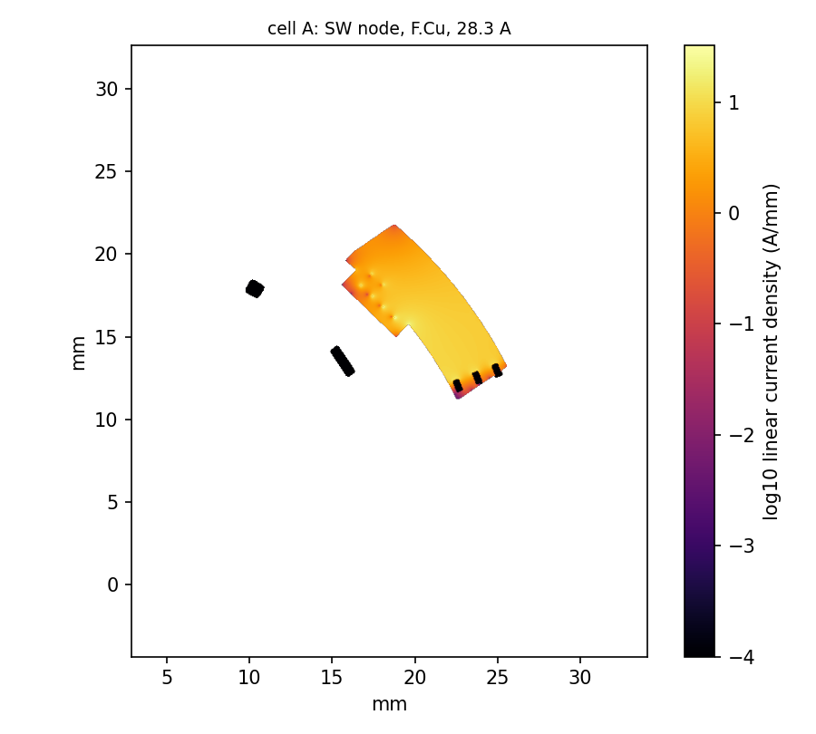
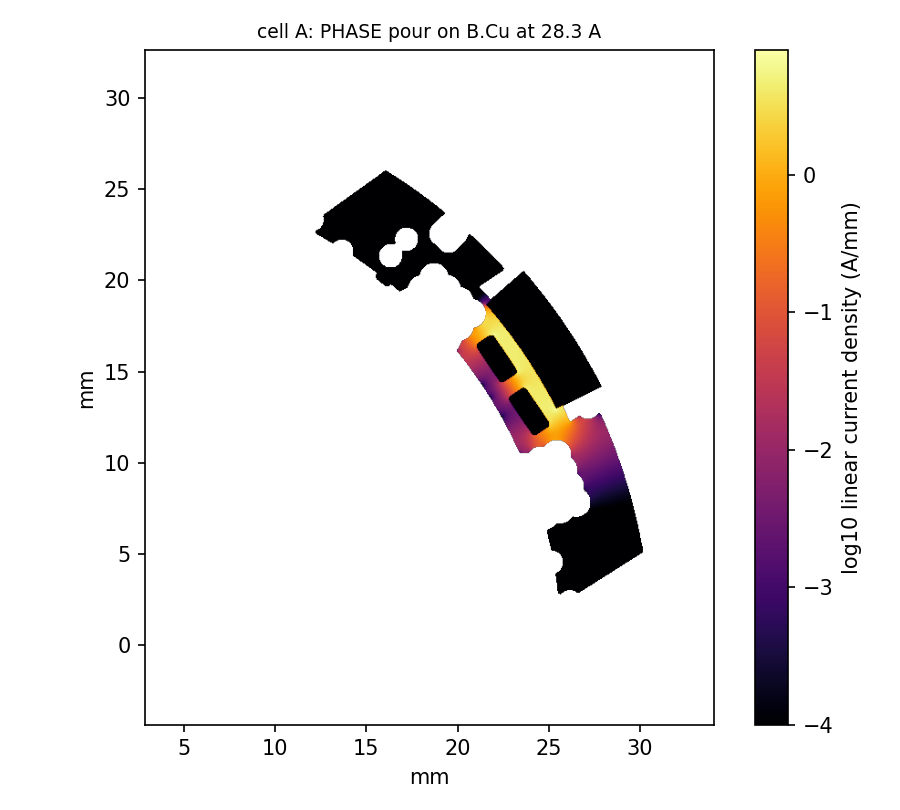
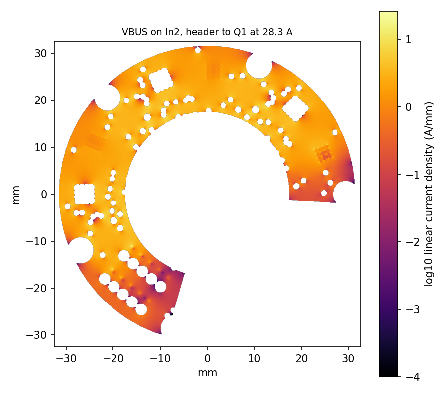
Grid convergence
| cell (mm) | lead to shunt (µΩ) | 99.9th percentile (A/mm) | 99th percentile (A/mm) |
|---|---|---|---|
| 0.12 | 31.92 | 5.29 | 4.55 |
| 0.08 | 30.97 | 5.23 | 4.53 |
| 0.05 | 30.03 | 5.19 | 4.5 |
The resistance converges; the peak current density does not, and cannot — it is a single cell at a re-entrant corner and grows without limit as the grid is refined. The percentiles are the numbers to compare with a width rule.
Q13
The link is fine; board B's bulk chemistry is not free
H2: CONFIRMED as a direction, bracketed in size: at 60 V the six 2.2 uF and six 100 nF are worth 5.5-9.7 uF against the 13.2 uF nominal that geometry.interconnect() assumes. No manufacturer DC-bias curve could be retrieved for an unchosen part, so this is a swept bracket, not a measurement.
The DC-link current waveform was synthesised from the switching functions of
three centre-aligned sine-PWM legs at m = 0.8 and 20 A rms,
which gives 12.37 A rms of ripple
— the same number geometry.interconnect() gets from its
closed form, which is a useful agreement between two independent derivations.
What differs is the split, because the impedances differ.
| ceramics at bias / board B bulk | C (µF) | Vbus p-p (V) | rms (V) | link (A rms) | ripple | link |
|---|---|---|---|---|---|---|
| min/polymer_4x100uF | 5.55 | 0.86 | 0.158 | 20.9 | PASS | PASS |
| min/electrolytic_3x100uF | 5.55 | 6.33 | 2.209 | 20.2 | FAIL | PASS |
| typ/polymer_4x100uF | 6.96 | 0.86 | 0.157 | 20.9 | PASS | PASS |
| typ/electrolytic_3x100uF | 6.96 | 6.29 | 2.138 | 20 | FAIL | PASS |
| max/polymer_4x100uF | 9.72 | 0.86 | 0.156 | 20.8 | PASS | PASS |
| max/electrolytic_3x100uF | 9.72 | 6.2 | 1.999 | 19.7 | FAIL | PASS |
The bulk chemistry decides it. With four 100 µF polymer hybrids the bus ripple is under two volts; with the three 100 µF electrolytics the spec originally listed, at 0.2 Ω of ESR, it is over six. The link carries about 20 A rms either way, inside the 30 A ten pins are worth.
The link itself — twenty mated pins and six brass standoffs across an 11 mm gap — is 0.81 nH and 0.18 mΩ at 1 MHz; the standoffs take 12 % of it off the header.
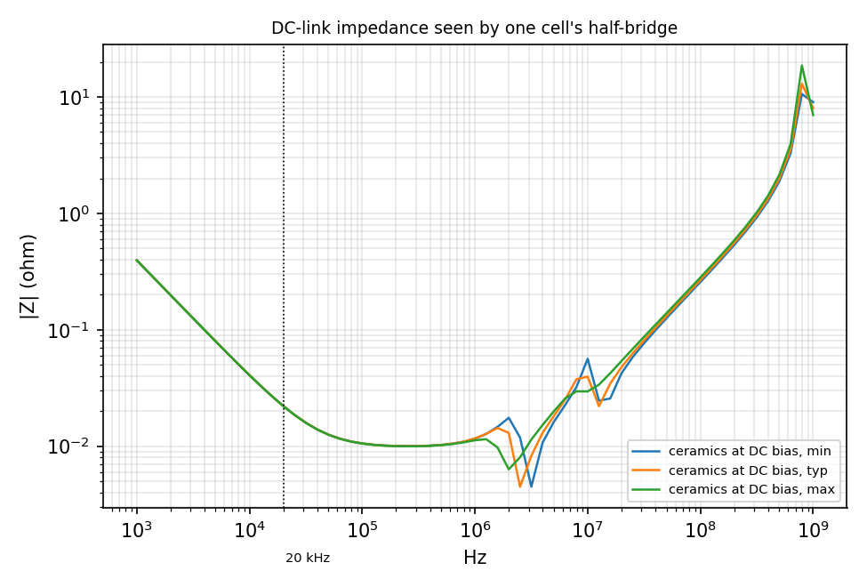
Q10
The magnet is too strong at the short gap; the leads, not the copper, move the angle
The MT6701 wants 20–100 mT at its own surface, over an air gap the datasheet allows to be 0.5–2.0 mm. The board carries a Ø8 × 2.5 mm diametric magnet where the datasheet recommends Ø6.
| grade | gap (mm) | off axis (mm) | B in plane (mT) | |
|---|---|---|---|---|
| N35 | 0.5 | 0 | 110.8 | FAIL |
| N35 | 1 | 0 | 93.7 | PASS |
| N35 | 1.5 | 0 | 78.4 | PASS |
| N35 | 2 | 0 | 65.3 | PASS |
| N42 | 0.5 | 0 | 120.5 | FAIL |
| N42 | 1 | 0 | 101.9 | FAIL |
| N42 | 1.5 | 0 | 85.3 | PASS |
| N42 | 2 | 0 | 71 | PASS |
At the nominal 1.5 mm gap the board's stack-up specifies, and at 1.0 mm, an N35 Ø8 magnet is inside the window. At the short end of the tolerance it is not, and an N42 is over the limit at 1 mm as well. The datasheet's own Ø6 gives 88 mT at 1 mm, comfortably inside.
The phase currents put 0.14 µT at the sensor from the board copper and 136 µT from the leads — a factor of 949. The board copper contributes little because the three phase pours are symmetric about the shaft axis and their in-plane fields cancel; the leads, which leave the board at three points and do not, are what is left.
The angle error that leaves is 0.09° peak, 4.1 LSB of the 14-bit word, against the 0.05° criterion. It is a gain-like error — it moves with the current — and what it costs is not torque, which loses 0.0001 % to the cosine and is nothing, but 0.045 A of misplaced d-axis current: real current, heating the windings and producing no torque.
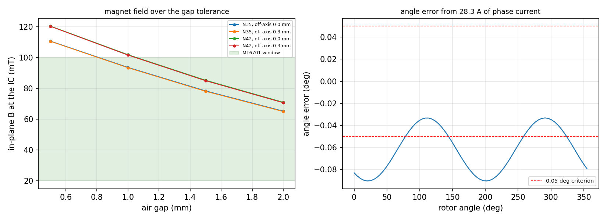
Q8
Synchronised sampling is worth three times the noise
The firmware's ADC runs free, round-robin over four channels at
500 kS/s, so each current channel is refreshed every 8 µs and
loopFOC() reads whatever the last conversion was. The question is
what that costs against sampling once per PWM period at the counter's zero,
where the ripple crosses its own average.
Measured against the average iq over each PWM period — which is what the loop is trying to regulate — free-running sampling gives 0.638 A rms of error and 1.82 A of bias. PWM-synchronised sampling gives 0.21 A rms and 0.84 A: the noise falls by 3× and the bias by half.
The residual bias is not the sampling — it is the low-pass filter's group delay on a rotating frame, and it belongs to the control design rather than to the ADC.
Where the error lives
| sampling | 0-200Hz | 200-1000Hz | 1000-5000Hz | 5000-10000Hz |
|---|---|---|---|---|
| free-running | 0.048 | 0.063 | 0.598 | 0.204 |
| synchronised | 0.047 | 0.048 | 0.199 | 0.014 |
the current loop's own bandwidth is about 1 kHz, so error below that is what it will try to follow and error above it is what the low-pass takes out Most of the free-running error sits between one and five kilohertz — at and just above the loop's own bandwidth, which is the worst place for it to be, because the loop is fast enough to chase some of it and not fast enough to reject it. Synchronised sampling takes that band down by 3×.
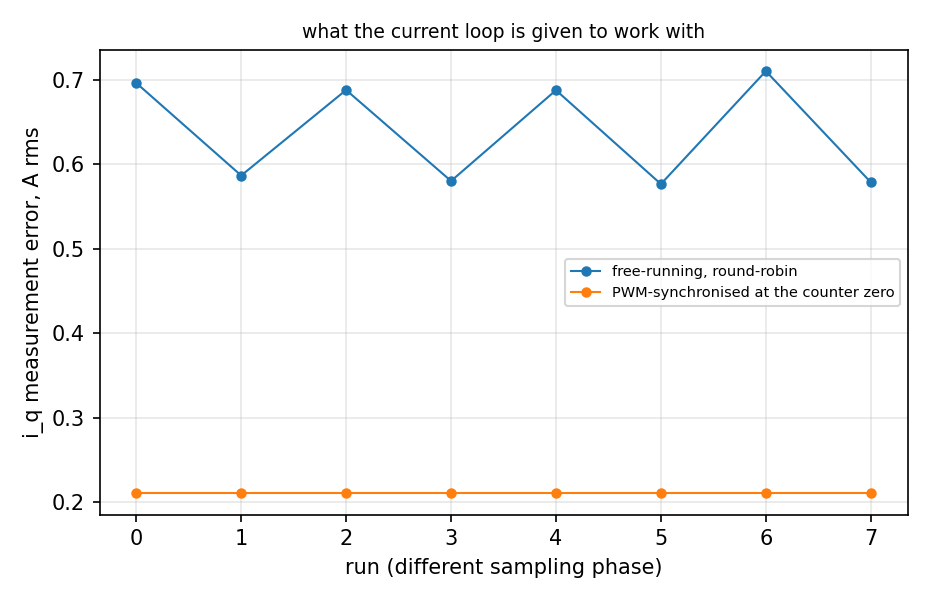
Q9
The software dead zone buys nothing the hardware has not already taken
The EG2103 turns on 780 ns after its input and off 220 ns after
it; the 560 ns difference is the interlock, and it is in the
hardware whether the firmware asks for it or not. On top of that SimpleFOC's
dead_zone = 0.02 takes another microsecond off each edge in
software.
| dead_zone | tdead,sw (µs) | rpm | iq (A) | THD (%) | torque (N·m) | ripple (% rms) |
|---|---|---|---|---|---|---|
| 0 | 0 | 500 | 7.1 | 11.49 | 1.142 | 14.37 |
| 0 | 0 | 500 | 28.3 | 3.41 | 4.777 | 3.8 |
| 0 | 0 | 2000 | 7.1 | 27.43 | 1.053 | 28.7 |
| 0 | 0 | 2000 | 28.3 | 8.03 | 4.706 | 6.36 |
| 0.005 | 0.25 | 500 | 7.1 | 11.49 | 1.143 | 14.37 |
| 0.005 | 0.25 | 500 | 28.3 | 3.41 | 4.778 | 3.8 |
| 0.005 | 0.25 | 2000 | 7.1 | 27.54 | 1.04 | 28.99 |
| 0.005 | 0.25 | 2000 | 28.3 | 8.02 | 4.692 | 6.36 |
| 0.01 | 0.5 | 500 | 7.1 | 11.52 | 1.143 | 14.38 |
| 0.01 | 0.5 | 500 | 28.3 | 3.41 | 4.778 | 3.8 |
| 0.01 | 0.5 | 2000 | 7.1 | 27.84 | 1.029 | 29.37 |
| 0.01 | 0.5 | 2000 | 28.3 | 8.04 | 4.681 | 6.39 |
| 0.02 | 1 | 500 | 7.1 | 11.59 | 1.143 | 14.44 |
| 0.02 | 1 | 500 | 28.3 | 3.44 | 4.778 | 3.82 |
| 0.02 | 1 | 2000 | 7.1 | 28.73 | 1.01 | 30.4 |
| 0.02 | 1 | 2000 | 28.3 | 8.11 | 4.659 | 6.52 |
The software term costs 0.76 % of torque and leaves the distortion essentially unchanged: the hardware's 560 ns already dominates. Distortion is worst at low current, where the dead time is a large fraction of the conduction interval — which is the usual shape and the reason dead-time compensation exists.
The minimum pulse the driver will pass makes duties below 2.4 % unreachable, and by symmetry the same at the top of the range.
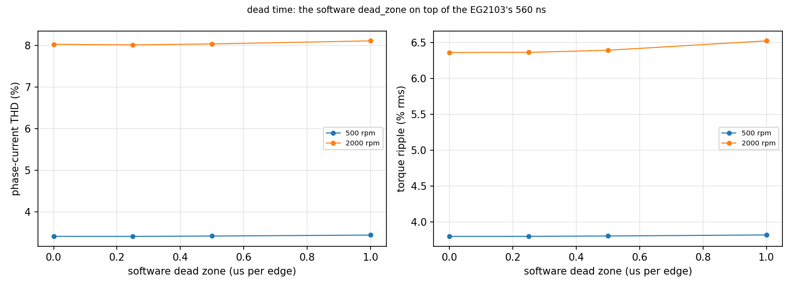
Q14
The bus guard is the only brake
There is no brake chopper: the sibling's fourth leg and 15 Ω resistor are not on this board, so a decel has nowhere to put its energy except board B's bulk and the two TVSs.
| bulk (µF) | J (kg·m²) | mechanical energy (J) | the bulk can take (J) | bus reaches the TVS in (ms) | left for the TVS (J) |
|---|---|---|---|---|---|
| 100 | 0.0001 | 2.19 | 0.073 | 0.065 | 2.1 |
| 100 | 0.001 | 21.93 | 0.073 | 0.065 | 21.9 |
| 100 | 0.01 | 219.32 | 0.073 | 0.065 | 219.3 |
| 300 | 0.0001 | 2.19 | 0.218 | 0.196 | 2 |
| 300 | 0.001 | 21.93 | 0.218 | 0.196 | 21.7 |
| 300 | 0.01 | 219.32 | 0.218 | 0.196 | 219.1 |
| 400 | 0.0001 | 2.19 | 0.291 | 0.262 | 1.9 |
| 400 | 0.001 | 21.93 | 0.291 | 0.262 | 21.6 |
| 400 | 0.01 | 219.32 | 0.291 | 0.262 | 219 |
| 1000 | 0.0001 | 2.19 | 0.728 | 0.654 | 1.5 |
| 1000 | 0.001 | 21.93 | 0.728 | 0.654 | 21.2 |
| 1000 | 0.01 | 219.32 | 0.728 | 0.654 | 218.6 |
The bulk is worth a fraction of a joule between 60 V and the TVS's breakdown. A decel at the design-point braking torque drives the bus into the TVS in a fraction of a millisecond, and what is left over is tens to hundreds of joules — orders of magnitude past what an SMDJ64A survives.
The firmware's guard folds the current limit to zero across 63–66 V and runs at the loop rate, so it reacts in about one 50 µs period. That is inside the time the bus takes to reach the TVS, but by a factor of a few, not a factor of a hundred. The guard is the only thing between a decel and a dead TVS, and it is a software guard.
Q11
Full wave: the loop cross-check and the far field
The commutation loop of Q1, on the same copper, in a solver that shares nothing with the first one: FastHenry is PEEC, quasi-static, no dielectric and no displacement current; openEMS is FDTD, the whole of Maxwell on a staircased grid. Driving the same port — the high-side C103 capacitor, the other three left open — openEMS gives 2.91 nH against FastHenry's 2.68 nH, 9 % apart. PASS against the spec's 25 % gate. The FDTD figure is the FDTD value with the device strip de-embedded; its raw value at the finest mesh is 3.04 nH, and FastHenry's is the converged end of its own grid sweep rather than the 1.2 mm production grid, which reads 2.72 nH.
What the first run of this phase got wrong. It reported 3.82 nH and read the difference as a disagreement between the solvers. Four things were wrong with it, none of them the solver's.
It was not solving this loop. The two conducting FETs were stood in for by cylinders of 0.25 mm radius about an axis lying in F.Cu. F.Cu to In1 is 0.1525 mm, so each rod stood a quarter of a millimetre proud of its own layer and cut through about 1 mm² of the In1 ground plane — and metal is metal in FDTD, so the high-side one shorted VBUS to GND at the drain and the current never reached In2 or the via field at all. Nothing in the run reported it: the energy decayed, the port impedance was clean, the answer was simply a different loop.
It was compared with the wrong number. Leff is the loop with all four capacitors conducting in parallel; the model drives one, whose own diagonal is 2.68 nH, not 2.06 nH.
It was stopped early. 60 k timesteps is 1.4 times its own excitation length, and the residual energy was still at −2 dB, so the port waveform it transformed was truncated. openEMS printed a warning saying so.
Its warning was misread. The 127 “dropped primitives” recorded as lost copper were via pads lying wholly inside barrel cylinders that already provide that copper at a higher priority.
What it takes to mesh this
There are no nets in an FDTD model, only metal: two conductors that come within one cell of each other are one conductor. The tightest net-to-net clearance in this window — barrel walls included, and it is the antipads the VBUS barrels pass through in the In1 ground plane — is 0.40 mm, so a mesh that does not stay well inside that joins VBUS to GND and the loop comes back far too small. A uniform mesh does exactly that: it reads 0.62 nH at 0.55 mm cells and does not reach 3.29 nH until 0.2 mm, by which point it costs more cells than the snapped mesh that gets there at 0.35 mm. The mesh used here is snapped to the copper instead: every polygon vertex and every barrel wall pins a line, so a clearance is resolved by construction rather than by where the grid happens to fall, and the fill between them stays coarse.
A uniform mesh, for comparison
| cell / feature (mm) | cells | Mcells | L (nH) | C (pF) | f0 (MHz) | fit residual | energy left (dB) |
|---|---|---|---|---|---|---|---|
| 0.55 | 62x74x71 | 0.33 | 0.618 | 5 | 2860 | 0.000139 | -42.83 |
| 0.35 | 83x100x71 | 0.59 | 1.759 | 33.3 | 657 | 0.015 | -44.47 |
| 0.2 | 131x156x71 | 1.45 | 3.286 | 54.8 | 375 | 0.006 | -42.74 |
Snapped to the copper
| cell / feature (mm) | cells | Mcells | L (nH) | C (pF) | f0 (MHz) | fit residual | energy left (dB) |
|---|---|---|---|---|---|---|---|
| 0.2 | 119x145x71 | 1.23 | 3.177 | 55.3 | 380 | 0.01 | -43.90 |
| 0.14 | 149x188x71 | 1.99 | 3.091 | 54.6 | 387 | 0.023 | -40.72 |
| 0.1 | 190x243x71 | 3.28 | 3.041 | 52.3 | 399 | 0.015 | -43.75 |
Each L here is the intercept of that fit, not a mean over the band: the band mean is 15 % higher because it includes the climb towards f0. The residual is what says one L and one C describe the port at all.
And what it takes FastHenry
| grid target (mm) | segments | L, this port (nH) | Leff, all four (nH) |
|---|---|---|---|
| 1.8 | 3708 | 3.117 | 2.349 |
| 1.4 | 5049 | 2.965 | 2.178 |
| 1.1 | 7870 | 2.706 | 2.019 |
| 0.9 | 10502 | 2.647 | 1.946 |
| 0.75 | 12805 | 2.681 | 1.976 |
The two solvers approach this loop from opposite sides, and the mechanism is different at each end. A uniform FDTD mesh reads low until its cells are inside the board's 0.40 mm clearances -- there are no nets in FDTD, only metal, so a cell that spans a clearance joins VBUS to GND -- and it climbs from 0.62 nH at 0.55 mm to 3.29 nH at 0.20 mm as that stops happening. Snapping the mesh to the copper reaches the same place without the uniform cost: 3.04 nH, moving 1.6 % on the last refinement. FastHenry falls down its own series, 3.12 nH at 1.8 mm to 2.68 nH at 0.75 mm, because a filament grid that coarse cannot let the return current concentrate under a leg running 0.4 mm above it, which is most of what sets this loop, and it has settled there: the last refinement moved it 1.3 % and in the other direction. The figure quoted for FastHenry here is the converged end of that sweep, 0.75 mm at 1 MHz, not the production run's 1.2 mm grid; the production model's own frequency sweep falls about 3 % between 1 MHz and 100 MHz, which is the band the FDTD extraction sits in, so the comparison is fair to within a few per cent either way. Neither solver had been run to its own convergence before this.
What the device costs the model
The PEEC model shorts a conducting FET at its own pads and pays nothing for it. A full-wave model cannot: the short has to be a real piece of copper, and a strip 0.35 mm wide sitting 0.15 mm above a ground plane carries a partial inductance of its own. Halving its width doubles that term and leaves the loop alone, so L(w) = L₀ + k/w and the pair extrapolates to the ideal short: 3.177 nH at full width and 3.444 nH at half give 2.91 nH for the loop alone, the strip itself accounting for 0.27 nH. That is the number the two solvers can honestly be compared on.
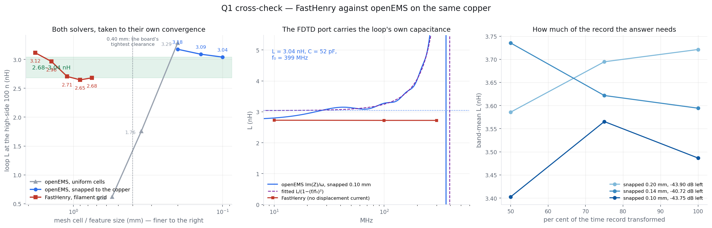
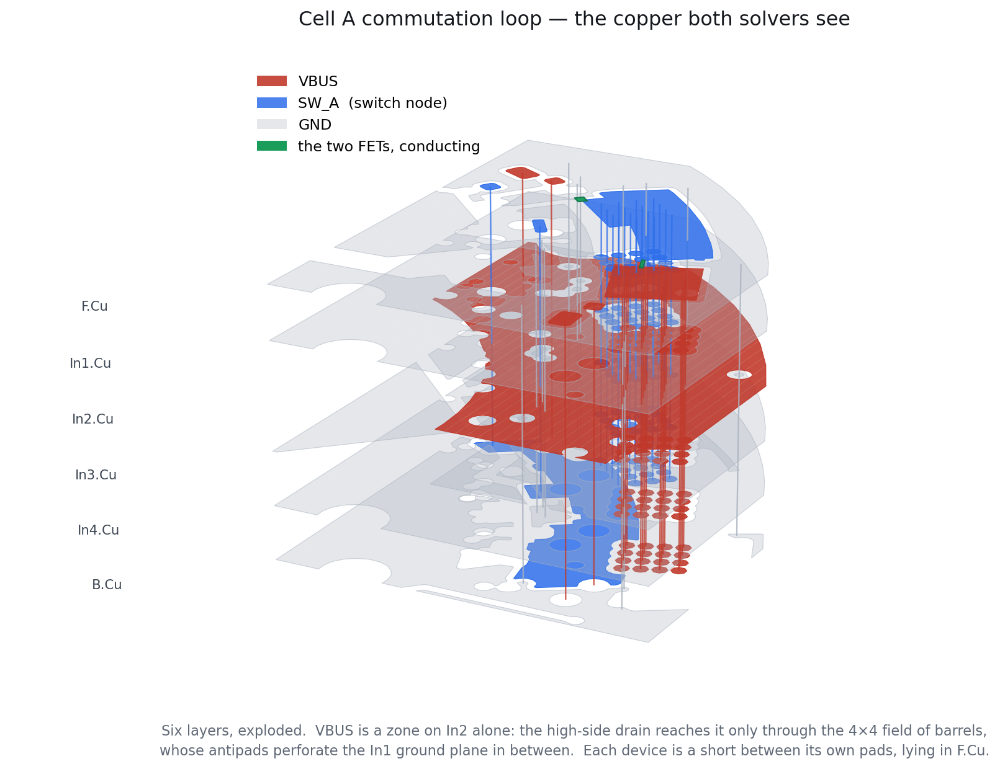
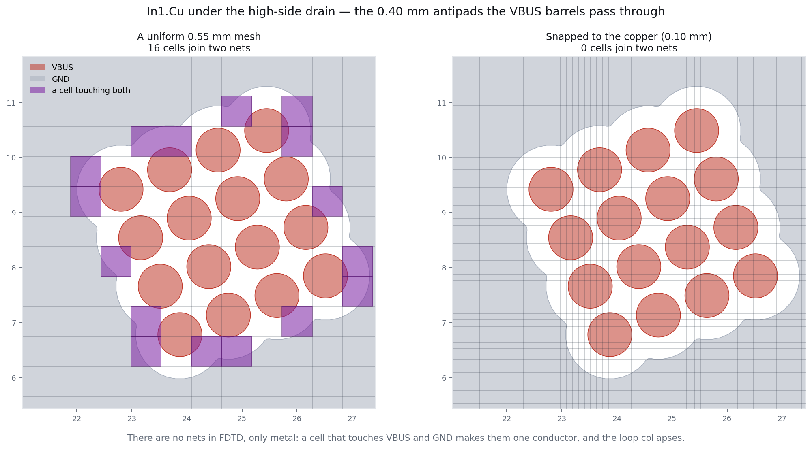
The whole-board near- and far-field model did not converge, and no radiated number is quoted. The mesh cannot represent this board. Its clearances are 0.40 mm and its tracks 0.15 mm; a 65 mm six-layer board allows 1.2 mm cells here, and at that size copper the board keeps apart is joined -- there are no nets in FDTD, only metal. Q1's cell-A model showed what that costs: the same loop came out 0.62 nH at 0.55 mm cells and 3.04 nH once the clearances were resolved, a factor of five. Snapping the mesh to the copper rescued the cell, which is 21 x 26 mm; pinning a line to every feature on the whole board is a 10^8-cell problem. No radiated level is quoted. (The directivity also comes out negative at 3 of the 5 probe frequencies, all of them below 30 MHz, where a board this size radiates almost nothing and the near-to-far-field transform is differencing numbers at its own floor -- that one is not the mesh's fault. 278 primitives were reported unused; those are mostly via pads their own barrels already provide and are not evidence of anything.)
Q12
The motor frame swings with the switch node
The four Ø3.2 mm motor mounts are NPTH — no copper, not a ground bond — so nothing on this board ties the motor's frame to board GND. The frame is left as a capacitive divider between the winding-to-frame capacitance and its own stray capacitance to the board, and it follows the switch node. Since everything here is driven by the edge, the sweep is run at both ends of the driver-impedance bracket of Q2.
| Cwf (pF) | Rsource (Ω) | dV/dt (kV/µs) | frame bond | frame peak (V) | Icm peak (A) | rms (A) | three phases (A rms) | |
|---|---|---|---|---|---|---|---|---|
| 100 | 40 | 12 | open | 46 | 0.31 | 0.006 | 0.011 | FAIL |
| 100 | 4 | 39 | open | 55.3 | 1.37 | 0.023 | 0.04 | FAIL |
| 100 | 40 | 12 | strap 20 nH | 25.2 | 1.59 | 0.087 | 0.15 | FAIL |
| 100 | 4 | 59 | strap 20 nH | 59.6 | 3.01 | 0.145 | 0.252 | FAIL |
| 100 | 40 | 12 | strap 2 nH | 2.5 | 1.5 | 0.033 | 0.058 | PASS |
| 100 | 4 | 57 | strap 2 nH | 29.1 | 6.62 | 0.115 | 0.199 | FAIL |
| 100 | 40 | 11 | ycap 4.7 nF | 2.1 | 1.35 | 0.028 | 0.048 | PASS |
| 100 | 4 | 34 | ycap 4.7 nF | 6.5 | 5.34 | 0.084 | 0.145 | PASS |
| 500 | 40 | 12 | open | 56.4 | 0.38 | 0.008 | 0.014 | FAIL |
| 500 | 4 | 65 | open | 67.9 | 1.66 | 0.029 | 0.05 | FAIL |
| 500 | 40 | 11 | strap 20 nH | 25.6 | 5.17 | 0.556 | 0.964 | FAIL |
| 500 | 4 | 35 | strap 20 nH | 50.7 | 6.76 | 0.57 | 0.988 | FAIL |
| 500 | 40 | 10 | strap 2 nH | 6.8 | 7.07 | 0.224 | 0.388 | PASS |
| 500 | 4 | 34 | strap 2 nH | 24.4 | 13.44 | 0.365 | 0.633 | FAIL |
| 500 | 40 | 10 | ycap 4.7 nF | 8.9 | 5.42 | 0.116 | 0.201 | PASS |
| 500 | 4 | 68 | ycap 4.7 nF | 18.5 | 13.34 | 0.209 | 0.361 | FAIL |
| 2000 | 40 | 12 | open | 58.9 | 0.4 | 0.008 | 0.014 | FAIL |
| 2000 | 4 | 55 | open | 71 | 1.75 | 0.03 | 0.052 | FAIL |
| 2000 | 40 | 11 | strap 20 nH | 33.2 | 10.83 | 1.923 | 3.331 | FAIL |
| 2000 | 4 | 52 | strap 20 nH | 65.3 | 14.22 | 2.615 | 4.529 | FAIL |
| 2000 | 40 | 8 | strap 2 nH | 8.9 | 17.07 | 0.902 | 1.562 | PASS |
| 2000 | 4 | 45 | strap 2 nH | 20.1 | 25.77 | 0.945 | 1.637 | FAIL |
| 2000 | 40 | 8 | ycap 4.7 nF | 20.8 | 10.99 | 0.283 | 0.49 | FAIL |
| 2000 | 4 | 40 | ycap 4.7 nF | 32.3 | 20.54 | 0.398 | 0.689 | FAIL |
Three things fall out of it. Left floating, the frame reaches 71 V peak against the 10 V criterion, though it carries almost no current, because there is nowhere for it to go. Bonding it with a long wire makes the voltage worse than a short one — 65 V against 29 V — because 20 nH resonates with Cwf and the frame overshoots. And nothing in the sweep is safe across all of it. Counting only the bonds that hold at every winding-to-frame capacitance — passing at one value of a quantity nobody has measured is not a fix — at the driver impedance the datasheet implies a strap 2 nH keeps the frame under 10 V, and at the strong-driver corner only 1 of 12 rows passes at all.
The price of bonding is current. The worst row here is 4.53 A rms across three phases, at 2000 pF of winding-to-frame capacitance through strap 20 nH — which is a conducted-emissions problem rather than a safety one, but it is not small. Cwf is the quantity nobody has measured: the whole table moves with it, and it is a property of the motor, not of this board.
P8
Thermal, the optional phase
The design's thermal model is geometry.via_thermal(),
geometry.thermal() and geometry.sink_needed(). Only
the two numbers it leans on are re-solved here.
| array | barrels | barrels (K/W) | FR4 (K/W) | together | the estimate | ratio |
|---|---|---|---|---|---|---|
| Q1 | 16 | 9.06 | 409 | 8.87 | 7.61 | 1.16 |
| Q2 | 16 | 9.06 | 329 | 8.82 | 7.61 | 1.16 |
The via array comes out 1.16× the estimate — close enough that the design's number stands.
The lateral spreading on F.Cu alone, from the low-side source pads to the heatsink land at R > 29.2 mm, is 11.3 K/W. That is one layer of six and an upper bound on that path; the design's whole-stack estimate is 1.0 K/W and the other five layers conduct in parallel.
The conduction phase's own Joule numbers, at the 28.3 A peak:
0.741 W in the switch node,
0.3 W in the ground return,
0.024 W in the phase pour — against
geometry.losses()'s 10.56 W total, of
which 5.69 W is device conduction.
Method
What was solved with what, and what was checked first
There is no passwordless sudo on this machine, so nothing was
installed with apt. FastHenry2 and FastCap2 were built from the
FastFieldSolvers sources (both needed patching for a modern compiler: K&R
declarations, -fcommon, and FastCap's own sbrk
allocator, whose implicitly-declared pointers are truncated on 64-bit and
segfault the solver). ngspice is driven through the
libngspice.so.0 that KiCad installs, because there is no CLI.
openEMS is built and run inside a container with only sim/
mounted.
Known-answer tests
| test | what it checks | error | |
|---|---|---|---|
fasthenry_wire | straight wire, l = 20 mm, d = 1 mm -- partial self inductance and R_dc | +0.51 % | PASS |
fasthenry_strip_over_plane | 15.4 x 5 mm strip, 70 um, 0.1 mm over a wide plane -- geometry.commutation_loop()'s PCB term | — | PASS |
fasthenry_two_wire_loop | two parallel wires, loop inductance vs Grover's partial-inductance forms | +0.23 % | PASS |
fastcap_plates | 10 x 10 mm plates at 0.1 mm in eps_r 4.5 -- 39.8 pF plus fringing | +1.82 % | PASS |
ngspice_rlc | L 2 nH, C 1 nF, R 0.5 Ohm step -- ring and decay | +0.00 % | PASS |
magpylib_wire | B of a straight wire at 25 mm, 28.3 A | +0.01 % | PASS |
magpylib_dipole | Dia 8 x 2.5 mm diametric magnet -- far field against the point dipole | — | PASS |
conduction_strip | rectangular strip -- rho*L/(W*t) | -1.12 % | PASS |
conduction_annulus_radial | annular sector, radial flow -- R = rho*ln(r2/r1)/(t*theta) | -1.10 % | PASS |
conduction_annulus_tangential | annular sector, tangential flow -- R = rho*theta/(t*ln(r2/r1)) | -0.18 % | PASS |
conduction_via_barrel | one 0.4 mm plated barrel between two planes -- rho_plated*d/A | — | PASS |
openems_microstrip | 0.2 mm microstrip on 0.1 mm eps_r 4.5 -- Hammerstad/Wheeler closed form | +2.93 % | PASS |
openems_strip_over_plane | the FastHenry strip-over-plane, cross-checked full wave | — | PASS |
Two of these are worth naming. The strip-over-plane case — exactly
geometry.commutation_loop()'s PCB term — comes out at
0.487 nH
in FastHenry and
0.506 nH in
openEMS, against the closed form's 0.387 nH: the two solvers agree with
each other to a few per cent and both sit above the formula, which ignores
fringing and the return path. And the straight-wire test disagrees with the
spec's own expected value: SPEC.md §5.4 quotes 17.4 nH, but its
own formula with l = 20 mm and r = 0.5 mm gives
14.53 nH,
which is what FastHenry returns.
The MOSFET model
ngspice's VDMOS has one shape parameter for Cgd and cannot be 32 pF at 40 V, integrate to 13 nC of Miller charge, and leave Qg at 61 nC all at once. Cgd and Cds are therefore charge-defined behavioural capacitors outside the primitive, solved from the datasheet's own specified points.
| parameter | datasheet | model | error |
|---|---|---|---|
| C_iss_40V_pF | 4300 | 4300 | +0.0 % |
| C_oss_40V_pF | 700 | 700 | +0.0 % |
| C_rss_40V_pF | 32 | 32 | +0.0 % |
| Q_gd_nC | 13 | 13 | -0.0 % |
| Q_oss_nC | 73 | 73 | -0.0 % |
| R_ds_on_mOhm | 2.6 | 2.6 | -0.0 % |
| Q_g_nC | 61 | 64.7023 | +6.1 % |
| V_plateau_V | 4.6 | 4.6066 | +0.1 % |
Switching times, as a check on the whole model
| datasheet (ns) | model (ns) | |
|---|---|---|
| t_d_on_ns | 20 | 13.7 |
| t_r_ns | 12 | 13.9 |
| t_d_off_ns | 43 | 25.1 |
| t_f_ns | 13 | 11.2 |
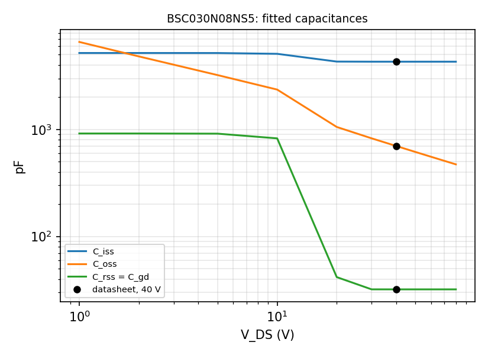
The toolchain as it ran
{
"fasthenry": "/home/sequoia/opt/FastHenry2/bin/fasthenry",
"fastcap": "/home/sequoia/opt/FastCap2/bin/fastcap",
"ngspice": "/usr/lib/x86_64-linux-gnu/libngspice.so.0",
"openems_image": "servodrive-openems:latest",
"numpy": "2.3.5",
"scipy": "1.18.1",
"matplotlib": "3.10.7+dfsg1",
"magpylib": "5.2.3",
"shapely": "2.1.2",
"meshio": "5.3.5",
"skfem": "12.0.2",
"pyamg": "5.3.0",
"h5py": "3.16.0",
"gmsh": "4.15.2",
"pcbnew": "ok"
}
Extraction
The board is read with pcbnew into
sim/work/geometry.json — zone fills, pad polygons at their
own absolute angles, tracks, barrels with their layer spans — and every
solver builds from that. Nothing here edits hardware/.
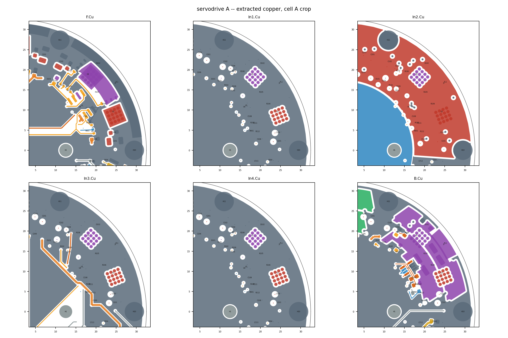
Scope
What this does not answer
- The RP2350 core buck (VREG_LX, 3.3 µH) and its spurs on +3V3A — out of scope by SPEC.md §4.
- USB and RS-485 signal integrity — out of scope.
- A motor FEA — there is no motor.
- Board B's own layout — none exists; it is modelled lumped.
- Thermal beyond the two numbers P8 re-solves — the via array's resistance and the lateral spread on F.Cu. There is no transient model and no heatsink.
And four kinds of number in here are bracketed rather than measured, because the part has not been chosen or the maker does not publish the figure: the EG2103's output impedance, the FET package's lead inductance, the DC-bias curve of the DC-link ceramics, and the TVSs' junction capacitance and forward resistance. Each is swept, and every result that depends on one says so. The first is the one that matters: it sets the edge rate, and the edge rate sets Q2, Q3, Q4's dV/dt and Q12.